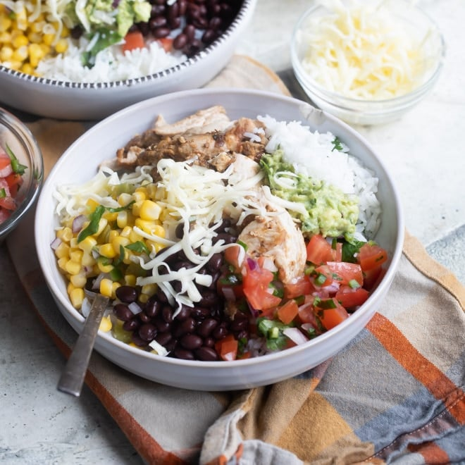

Chipotle Recipe

Description
The DIY Chipotle Burrito bowl is a delicious nutritious bowl and easy to make. They are ready and on the table in 30 minutes, which means they are the perfect meal for a busy weeknight, and you can always count on them being a crowdpleaser. Bonus points for how easy they are to customize to each individual persons preference.
Ingredients
- Vegetable Oil
- Water
- Lime
- Chopped Cilantro
- Kosher Salt
- Chiken
Steps
- In a heavy saucepan, heat the oil over medium heat. Once hot, add the white rice and lime juice and sauté for 60 seconds to toast the rice.
- Add the water and bring the rice to a boil. Cover and reduce the heat to low and cook until the rice is tender and all the water is absorbed.
- Combine the vegetable oil, chopped chipotle peppers in adobo, garlic powder, cumin, dried oregano, and black pepper in a small bowl.
- Place the chicken in a large zip top plastic bag and add the marinade. Zip the bag and mix the chicken into the marinade. Place it into the fridge and let it marinate for at least 1 hour.
- Grill the chicken 5 to 6 minutes per side, until the chicken is cooked. Remove the chicken from the grill and let rest for 10 minutes to lock in the juices before chopping.
Back to Home